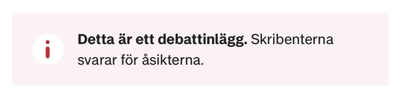
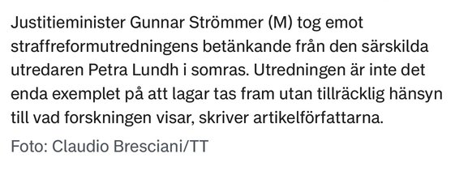

Sydsvenska Dagbladet · Debatt
Fakta och vetenskap får stå tillbaka när nya lagar tas fram
- Lina Tebbla ordförande
- Amalia Juneström sekreterare
- Albin Larsson styrelseledamot
- Mikael Andersson styrelseledamot
Akt I · Referensblad
Sydsvenska Dagbladet · Debatt

AI-illustration · ersätter pressbilden

Skribenterna utgår från regeringsformens första paragraf, att den offentliga makten utövas under lagarna, och konstaterar att den inte säger något om vad lagarna ska byggas på. Som företrädare för Vetenskap och Folkbildning menar de att lagar bör bygga på fakta och vetenskap, och att det under senare år har blivit vanligare att så inte sker. De beskriver hur lagstiftningsprocessen är tänkt att fungera: kommittédirektiv, sakkunniga i utredningarna, remissförfarande och Lagrådets granskning.
Huvudexemplet är Straffreformutredningen. Enligt skribenterna angav regeringen i direktiven att kriminalpolitikens främsta syfte är att förebygga brott, men gav samtidigt utredaren i uppdrag att föreslå kraftiga straffskärpningar oavsett ställningstagande i sak. De pekar på utredarens egen osäkerhet om effekten, på kostnaderna, på remissinstansernas kritik och på att Lagrådet avstyrkte förslagen. Artikeln avslutas med en uppmaning till framtida regeringar att i större utsträckning låta vetenskapen vägleda lagstiftningen.
Referatet bygger på den längre version som Folkvett publicerade i juli (akt III). Enligt Folkvetts ingress publicerade Sydsvenskan texten i nedkortat skick.
Vetenskap och Folkbildning · Facebook
Debattartikel i Sydsvenskan idag. Tack alla som jobbat med den!
sydsvenskan.se”Fakta och vetenskap får stå tillbaka när nya lagar tas fram.”
Kommentarerna skrevs mellan 10 och 15 april och återges i sin helhet. Privatpersoner står med förnamn.